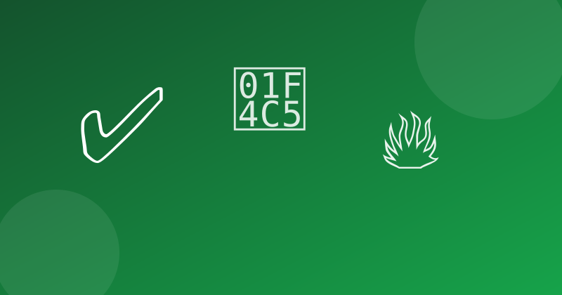

5 Best Free Habit Tracker Apps for Android (2026)

Building a habit is easy to start and hard to keep going — and that is exactly what a good habit tracker is for. We tested the most popular free habit trackers on a mid-range Android phone for one question: which one actually keeps you coming back, without ads, a subscription, or a feature paywall on day two?
What we tested
- Streaks & stats — whether the app shows your progress honestly and forgives a missed day instead of resetting everything
- Reminders — per-habit reminders that work without opening the app
- Ads & paywalls — whether the useful features are actually free or locked behind a subscription
- Everyday use — quick check-ins from a widget or notification, flexible schedules, and no account forced on you
1. Loop Habit Tracker — best free, no ads, no account
Loop is the cleanest habit tracker you can install: completely free, no ads, open source, and it works fully offline with no account at all. It tracks streaks and a "habit strength" score that forgives a missed day after a long run, instead of wiping your progress. Flexible schedules (daily, three times a week, every other day), per-habit reminders you can check off from the notification, home-screen widgets, and detailed charts — plus you can export your data to a spreadsheet. The interface is minimal and the app has no social or gamification extras, so if you want pure tracking, this is it.
2. HabitNow — best all-in-one routine planner
HabitNow combines habits, to-dos, routines and a calendar in one app, with timers (stopwatch, countdown, Pomodoro-style intervals), daily notes and detailed statistics. You can set daily, weekly or monthly goals, customise themes and icons, and lock the app with a passcode. The free version covers the core tracking well; some extras are paid. If you want one app that runs your whole day — not just a habit checklist — HabitNow is the most complete free option here.
3. Habitica — best if games keep you motivated
Habitica turns your habits into a role-playing game: you create a pixel avatar, check off habits and daily tasks, and earn gold, experience and collectable gear and pets. Miss a daily and your avatar takes damage — which is either brilliant motivation or mildly stressful, depending on you. It also has parties for team accountability, challenges with shared task lists, and sync across devices. The app is free with in-app purchases, and it is open source. If streaks alone never kept you going, the game layer genuinely might.
4. Habit Tracker (HabitBull) — best for streaks and community
Habit Tracker — originally known as HabitBull — is one of the longest-running habit apps on Android: each habit gets its own calendar, a streak counter and a success percentage, with reminders, motivational quotes and discussion forums built in. It is free with in-app purchases, and it also works as a planner for things like taking medicine on time or cutting a bad habit. One honest caveat: some users reported startup crashes in early 2026, which the developer says were fixed in later updates — so make sure you are on the latest version.
5. Fabulous — best for guided routines and self-care
Fabulous is less a tracker and more a coach: it builds structured morning and evening routines, with daily coaching, gratitude journaling, short workouts, breathing exercises and meditation sessions. It is the prettiest app on this list and the most hand-holding — good if you want the app to tell you what to do next rather than just record what you did. The trade-off is the paywall: many coaching journeys and unlimited habits need the Premium subscription, so the free version is more of a taster than a full tracker.
Quick comparison
| App | Ads | Free plan | Best for |
|---|---|---|---|
| Loop Habit Tracker | None | Fully free | Clean, private tracking |
| HabitNow | Yes (free tier) | Core features free | All-in-one routines |
| Habitica | Yes (free tier) | Core features free | Gamified motivation |
| Habit Tracker | Yes (free tier) | Core features free | Streaks + community |
| Fabulous | None | Limited free tier | Guided self-care routines |
Note: prices and free-tier features change often — always check the Play Store listing before installing. We never link to cracked or modded apps.